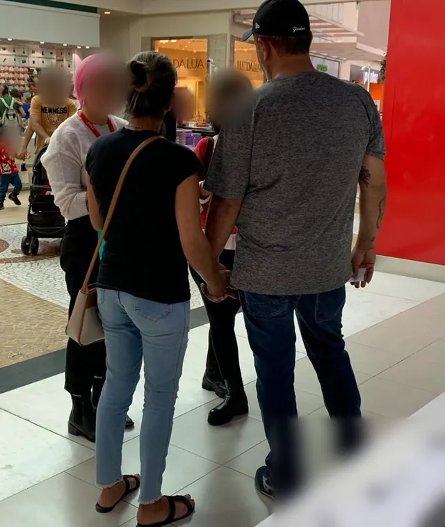

Proyectos Caso 02
Strategic UX Research para la transformación digital
Investigación sobre journeys fragmentados de clientes, dentro de una transformación que reunió el autoservicio residencial y móvil en una sola experiencia.
Visión general y reto
Investigación estratégica y de UX para un gran operador de telecomunicaciones brasileño, como parte de una transformación digital que reunió sus apps de autoservicio residencial y móvil en una sola experiencia.
Los clientes residenciales y móviles gestionaban sus servicios en apps separadas, incluso cuando eran clientes de ambos. La fragmentación también era interna: sistemas y equipos distintos dificultaban construir una visión única del cliente.
Los clientes no deberían tener que entender cómo se organiza la empresa para resolver sus problemas.
La investigación contribuyó a reunir dos apps de autoservicio en una sola experiencia, desde el discovery hasta la primera fase de implementación.
- Sector
- Telecomunicaciones
- Organización
- Gran operador de telecomunicaciones brasileño
- Duración del proyecto
- 6 meses
- Año
- 2023
Estrategia de investigación
Preguntas que la investigación debía responder:
- ¿Cómo usan sus servicios los clientes residenciales, móviles y con servicios combinados?
- ¿Dónde generan fricción los journeys digitales actuales?
- ¿Cómo organizan sus servicios digitales los competidores?
- ¿Qué clientes se verían más afectados por la integración?
- ¿Funcionan para los usuarios las funcionalidades existentes y propuestas?
Un enfoque de métodos mixtos en tres momentos, en paralelo al trabajo de integración.
-
01
Investigación y discovery
Entrevistas con clientes y stakeholders, cuestionarios, análisis de NPS y TNPS, investigación de mercado y de competidores y análisis de journeys. Los resultados se sintetizaron en tres personas basadas en la investigación.
-
02
Alineamiento estratégico
Los hallazgos se discutieron con UX y diseño, producto, tecnología y dirección, conectando la evidencia sobre los clientes con las prioridades de la integración.
-
03
Seguimiento de la implementación
Las pruebas de usabilidad moderadas y no moderadas continuaron a medida que se proponían nuevos flujos, y reuniones semanales entre áreas acompañaron las primeras entregas de la integración.
La investigación en la práctica



- Prueba de usabilidad en tienda, observando cómo los clientes pasaban de los canales físicos a los digitales.
- Sesión remota moderada con el prototipo del acceso unificado, durante la implementación de la app.
- Lean design y alineamiento semanal entre tecnología y arquitectura, producto y negocio, e investigación y diseño.
Insights principales y direcciones de diseño
Los clientes residenciales y móviles mostraban patrones distintos de comportamiento y satisfacción. Tres personas hicieron visibles estas diferencias para los equipos, incluidos los clientes con servicios combinados.
Sobre todo, la integración debía ir más allá de consolidar funcionalidades. Cada parte de la experiencia que examinó la investigación se convirtió en una dirección discutida con los equipos.
-
Lo que mostró la investigación
Los clientes con ambos servicios pasaban de una app a otra.
Dirección de diseño
Acceso unificado a los servicios residenciales y móviles.
-
Lo que mostró la investigación
La gestión de productos estaba dividida por servicio.
Dirección de diseño
Gestión más centralizada de los productos.
-
Lo que mostró la investigación
La facturación y la información de servicio definían la experiencia.
Dirección de diseño
Facturación e información de servicio más sencillas.
-
Lo que mostró la investigación
Los beneficios estaban desconectados de los servicios.
Dirección de diseño
Beneficios y servicios mejor conectados.
-
Lo que mostró la investigación
Los clientes pasaban del autoservicio a la atención humana.
Dirección de diseño
Atención más coherente entre canales digitales y humanos.
El análisis de mercado y competitivo situó estos hallazgos en el panorama más amplio de los servicios digitales.
Impacto en la transformación
Estas direcciones orientaron la integración de las dos apps de autoservicio en una, simplificando cómo los clientes accedían a sus servicios residenciales y móviles y los gestionaban. Seguí implicada hasta las primeras entregas de la integración, dentro de una transformación más amplia que continuó después del proyecto.
Transformación a escala
- 2 → 1
- Apps de autoservicio reunidas en una sola experiencia
- Decenas de millones
- Usuarios activos mensuales en las dos apps, según datos públicos de 2024
- 6 meses
- De investigación, del discovery a la primera fase de implementación
Mi contribución
Trabajé como UX Researcher junto al responsable de UX y diseño, en la investigación y el alineamiento de la integración.
Realicé la investigación con clientes y stakeholders, analicé los journeys de los servicios residenciales y móviles, desarrollé las personas, llevé a cabo las pruebas de usabilidad y llevé la evidencia a las conversaciones con producto, diseño y tecnología. También participé en el seguimiento semanal entre áreas, acompañando la primera fase de la integración hasta las entregas.